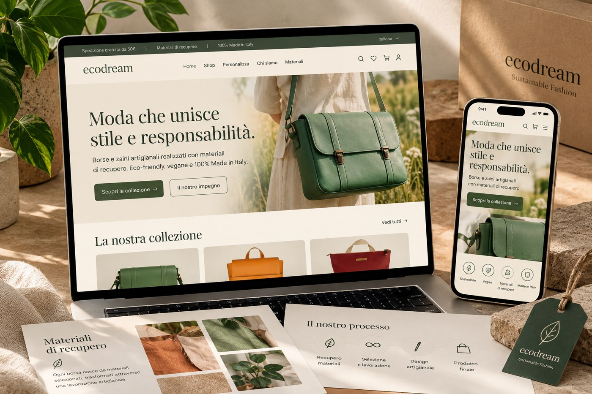
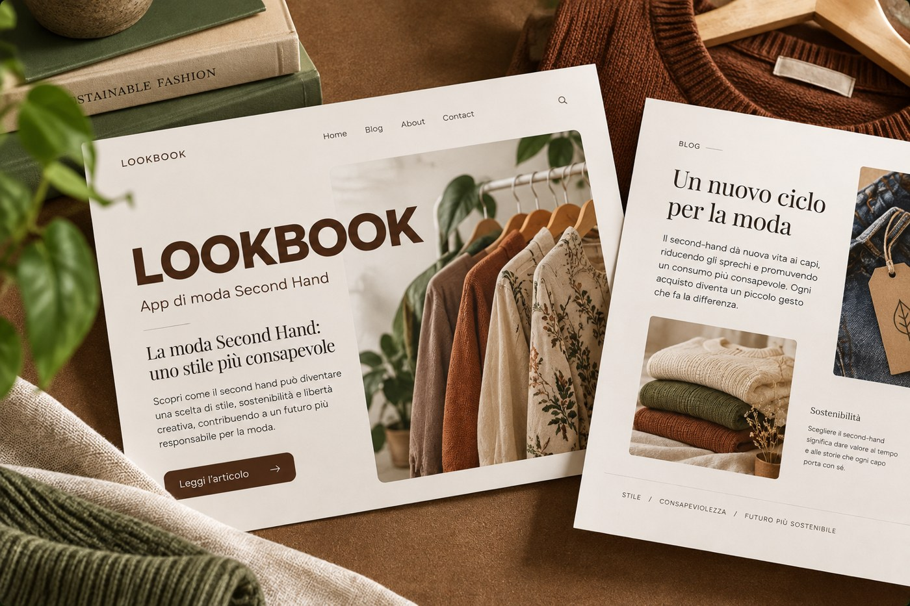
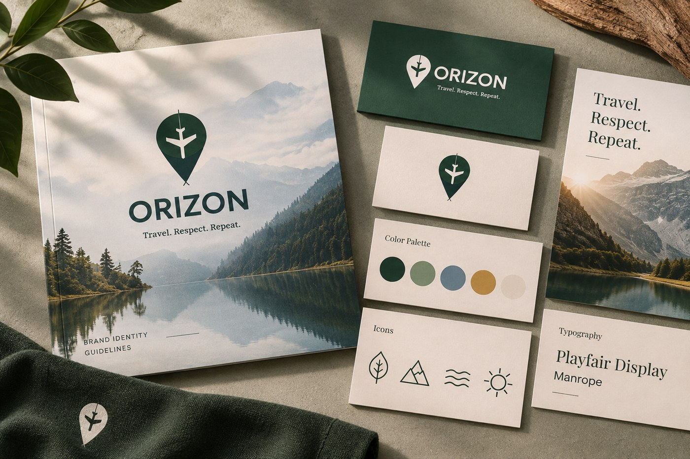

01 — UX/UI DESIGN
Ecodream
A complete UX/UI redesign for a sustainable fashion brand, developed from initial research and user personas to accessibility improvements, wireframes and a responsive interface.
VIEW CASE STUDY →
A collection of projects exploring UX/UI design, visual identity and digital communication.
01 — UX/UI DESIGN
A complete UX/UI redesign for a sustainable fashion brand, developed from initial research and user personas to accessibility improvements, wireframes and a responsive interface.
VIEW CASE STUDY →
02 — COPYWRITING
An editorial copywriting project for a second-hand fashion brand, combining audience research, tone of voice, persuasive writing and SEO to promote conscious fashion.
VIEW CASE STUDY →
03 — BRAND IDENTITY
A visual identity for a sustainable travel brand, including logo design, typography, colour palette and custom icons.
VIEW CASE STUDY →